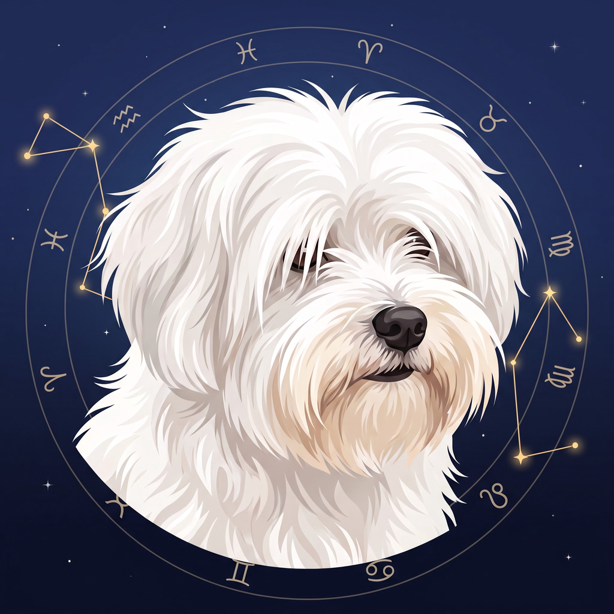

Donnie Horoscope
An astrology app for Android: a new life for ZodiacSigns V1.66, an MS-DOS astrology program from 1992. Same calculations, exactly. A modern interface made for fingers, and the original DOS screens kept as a Classic look. Named after Donnie, a much-loved dog.
Downloads
Install the app
- Tap Download under The app. The file is
DonnieHoroscope-latest.apk. - Open the downloaded file (from the notification or the Files app).
- Android may say it can't install apps from this source: tap Settings, turn on Allow from this source for your browser or file manager, and go back.
- Tap Install, then Open.
Updating: install the newer APK over the old one, the same way. Your charts and settings stay. In the app, More → Updates and manual → Open download page brings you back here.
Open a chart pack
- Download the pack (a
.zipfile of charts). - In Donnie Horoscope open Charts → Open chart pack (.zip)… and pick the file. Or open the .zip from your file manager and choose Donnie Horoscope.
- The charts appear in the list. Charts you already have are not duplicated; for charts with the same name the app asks whether to replace them, keep both, or skip.
You can make your own packs too: Charts → Share charts as .zip…
What it does
- Birth charts with a round wheel, planets, houses (Placidus or Koch) and aspects with orbs.
- A birth form the keyboard never covers, with calendar and clock pickers and a live preview.
- A world map that works offline: about 8,400 places, with the time zone and summer time of the birth date.
- Overview, planetary weights, sensitive points and the Chaldean Lords, as in the original.
- PDF export of the chart, search through your charts, chart packs to share.
- Three looks: Night, Day and Classic DOS.
Privacy: no account, no internet needed, no tracking. Your charts stay on your phone, in
Documents/donnie_horoscope.